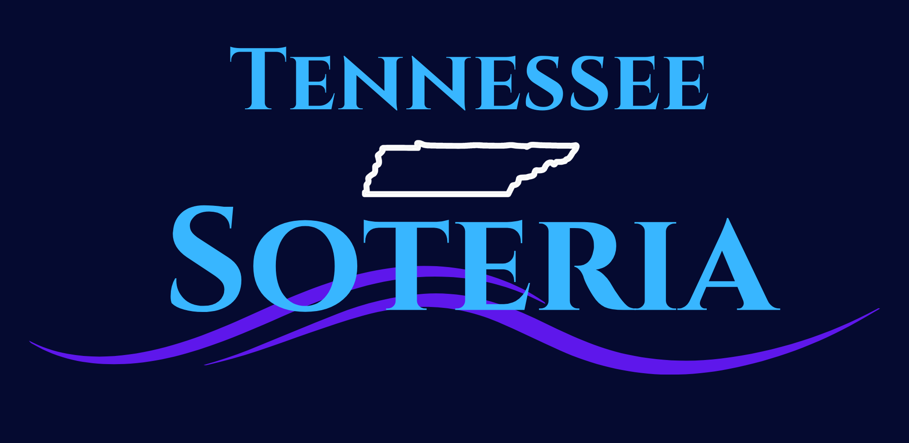

Rapid Chemical Emergency Decision Support
We develop rapid chemical dispersion and emergency response tools designed to support the first minutes and hours of a hazmat or chemical release scenario. Our platform helps teams quickly understand where conditions are safe, conditional, or hazardous as an event evolves.
Deliver rapid, practical chemical hazard modeling that improves situational awareness, supports decision-making, and strengthens emergency response readiness.
Our mission is to provide responders, facilities, and safety professionals with a fast, reliable, and easy-to-use advisory layer for chemical release planning, training, and incident support.
About
Tennessee Soteria is an early-stage technology company focused on modernizing chemical emergency response tools. We are building rapid dispersion modeling and documentation software that helps organizations respond faster, train more effectively, and create more defensible incident records.
Our goal is not to replace existing emergency plans or safety systems, but to serve as a fast, operationally useful advisory layer that improves visibility and confidence during time-sensitive scenarios.
Leadership
Co-Founder
Jacob Clevenger is a junior in Nuclear Engineering at the University of Tennessee, Knoxville and a co-founder of Tennessee Soteria. His work focuses on chemical release modeling, emergency response software, and the development of practical tools for safety, training, and planning applications.
Co-Founder
Matthew has experience across engineering, including work at the Y-12 National Security Complex and with the United States Air Force. He studied finance and engineering at the University of Tennessee, Knoxville, with exposure to high-consequence systems and safety-critical operations.
Capabilities
Generate hazard and protective zone estimates quickly enough to support the early phases of an emergency response.
Help teams determine where conditions are safe, conditional, or hazardous as the situation evolves.
Capture timelines, modeled zones, and key decisions during drills and incidents to improve consistency and auditability.